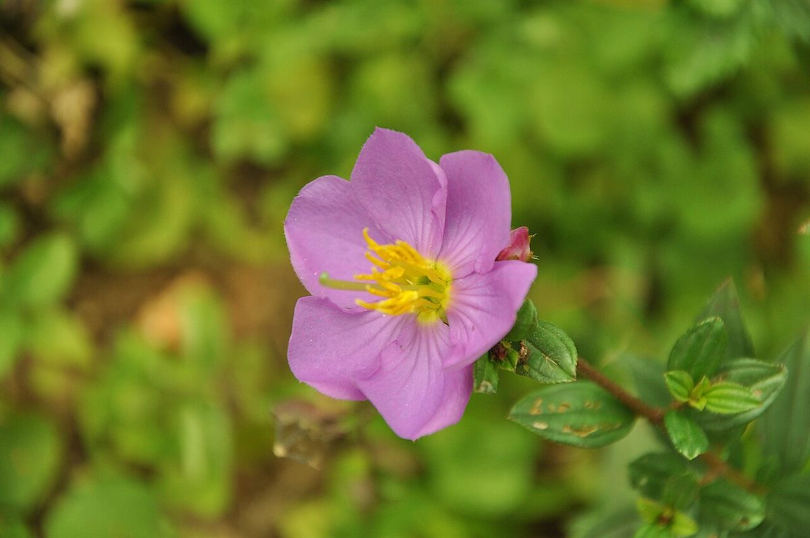

口コミ
口コミ(イメージ)
以下は制作側の創作で、実在のお客様の投稿ではありません。
→ 1本目: 創作の声3件
こんな声が届くお店になりますように。
- イメージ例
いつか行ってみたいお店です。まずはInstagramをのぞいて、気になったら場所を確かめたいです。
- イメージ例
Instagramをのぞいてみたいです。更新を見て、行ってみたい日を決められたらうれしいです。
- イメージ例
営業時間などが分かったら、行ってみたいです。それまでは、Instagramの更新を楽しみにしています。
上の3件は、制作側が想像して書いた文章です。実在のお客様の投稿・感想ではなく、お店の実際の様子とも関係がありません。
